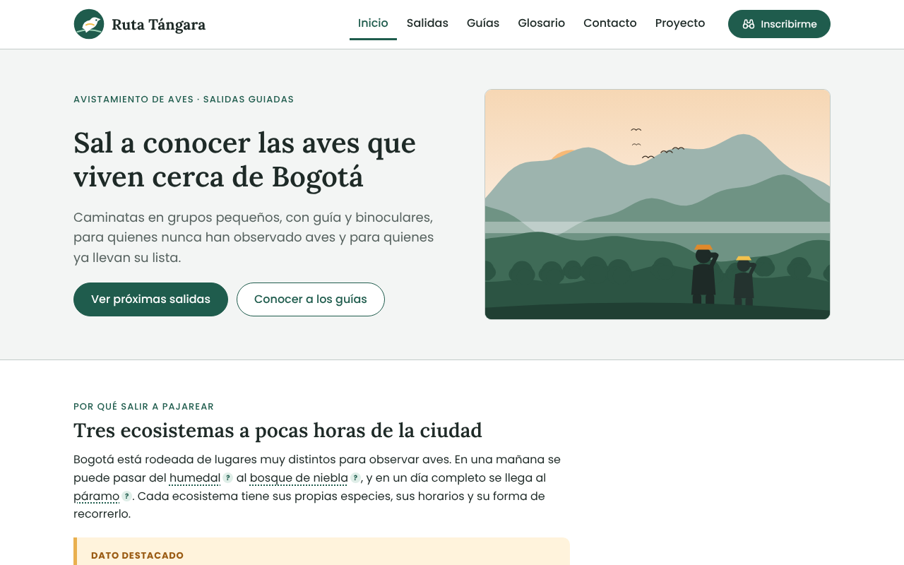
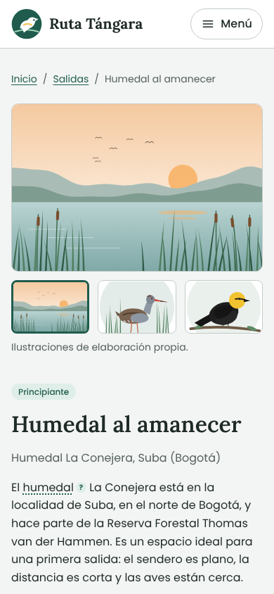

Actividad 4 · Herramientas para el desarrollo de la aplicación web
Así construimos este sitio
Ruta Tángara es el sitio web de un cliente ficticio que organiza salidas de avistamiento de aves cerca de Bogotá. En la Actividad 2 diseñamos su wireframe; en esta actividad lo convertimos en un sitio funcional, con contenido real sobre las aves y los lugares, y lo publicamos en un servicio de hosting gratuito.
| Autoras | Wendy Jelitza Torres Jimenez y Sofi Yanina Chilatra Tapiero |
|---|---|
| Asignatura | Electiva I – Diseño de aplicaciones web I |
| Docente | Diana Toquica |
| Institución | Facultad de Ingeniería, Corporación Universitaria Iberoamericana |
| Hosting | GitHub Pages (gratuito) |
Video: demostración de la creación del sitio
El video de demostración se mostrará aquí en cuanto se publique en YouTube.
Herramientas
Con qué lo hicimos
| Herramienta | Uso en el proyecto |
|---|---|
| HTML5 | Estructura de las nueve páginas, con etiquetas semánticas como header, nav, main, section, table y footer. |
| CSS3 | Diseño visual y adaptable: variables de color, cuadrículas (grid), cajas flexibles (flex) y consultas de medios para el celular. |
| JavaScript | Filtro y orden de salidas, galería, pestañas, validación del formulario, cálculo del total, confirmación y botones para copiar. |
| Visual Studio Code | Editor de código para escribir y organizar los archivos. |
| SVG | Ilustraciones vectoriales propias de los paisajes, las aves y los guías. |
| Lora y Poppins | Fuentes de uso libre (licencia OFL), alojadas dentro del sitio para que carguen sin depender de otro servidor. |
| xeno-canto y OpenStreetMap | Reproductores de cantos de aves con licencia Creative Commons y mapa del punto de encuentro. |
| Git, GitHub y GitHub Pages | Control de versiones y publicación gratuita del sitio en internet. |
Proceso de desarrollo
- Partimos del wireframe. Conservamos la estructura de pantallas, la paleta y la tipografía definidas en la Actividad 2.
- Investigamos el contenido. Reemplazamos los marcadores grises por información verificada sobre los lugares y las aves.
- Escribimos el HTML de cada página con un encabezado y un pie comunes.
- Aplicamos los estilos en una sola hoja CSS, con variables para los colores.
- Programamos la interacción en JavaScript, a partir de un archivo de datos con las seis salidas.
- Probamos en computador y celular, y revisamos enlaces y ortografía.
- Publicamos el sitio en GitHub Pages.
Funciones del sitio
- Filtro por nivel y orden por fecha o valor en la página de salidas.
- Ficha de cada salida generada desde los datos, con galería y pestañas.
- Formulario de inscripción con validación y cálculo automático del total.
- Página de confirmación con número de inscripción para copiar.
- Cantos de aves, videos y mapa integrados en las páginas.
- Glosario enlazado desde los términos técnicos.
- Diseño adaptable a celular, con menú desplegable.
Resultado
El sitio en computador y en celular


Créditos
Grabaciones y fuentes
| Especie | Grabación | Autor | Licencia |
|---|---|---|---|
| Copetón | XC881658 | MasBiomas | CC BY-NC-SA 4.0 |
| Mirla patinaranja | XC410080 | Diego Gaona | CC BY-NC-SA 4.0 |
| Colibrí chillón | XC338150 | David Ricardo Rodríguez Villamil | CC BY-NC-SA 4.0 |
| Monjita (canto) | XC303472 | David Ricardo Rodríguez Villamil | CC BY-NC-SA 4.0 |
| Monjita (llamado) | XC513503 | Fernando Castro | CC BY-NC-SA 4.0 |
| Chamicero cundiboyacense | XC577119 | ClaraMarcela Rubiano Velasco | CC BY-NC-SA 4.0 |
| Cucarachero de pantano | XC20399 | Oswaldo Cortes | CC BY-NC-ND 2.5 |
| Tingua bogotana | XC783188 | Pedro Arturo Camargo Martínez | Ver ficha en xeno-canto |
Fuentes de información
- BirdLife International. (2024). Species factsheet: Apolinar's Wren Cistothorus apolinari. Enlace
- BirdLife International. (2025). Species factsheet: Bogota Rail Rallus semiplumbeus. Enlace
- Linares-Romero, L. G., Acevedo-Charry, O., Avellaneda, F., Cortés-Herrera, O., Cuervo, A. M., et al. (2020). Aves del Parque Nacional Natural Chingaza y zona de amortiguación, Cordillera Oriental de Colombia. Biota Colombiana, 21(1), 117-129. https://doi.org/10.21068/c2020.v21n01a09
- Wikipedia. Artículos Humedales de Bogotá, Humedal La Conejera, Humedal Tibabuyes, Geografía de Bogotá, Páramo andino y Bosque nuboso.